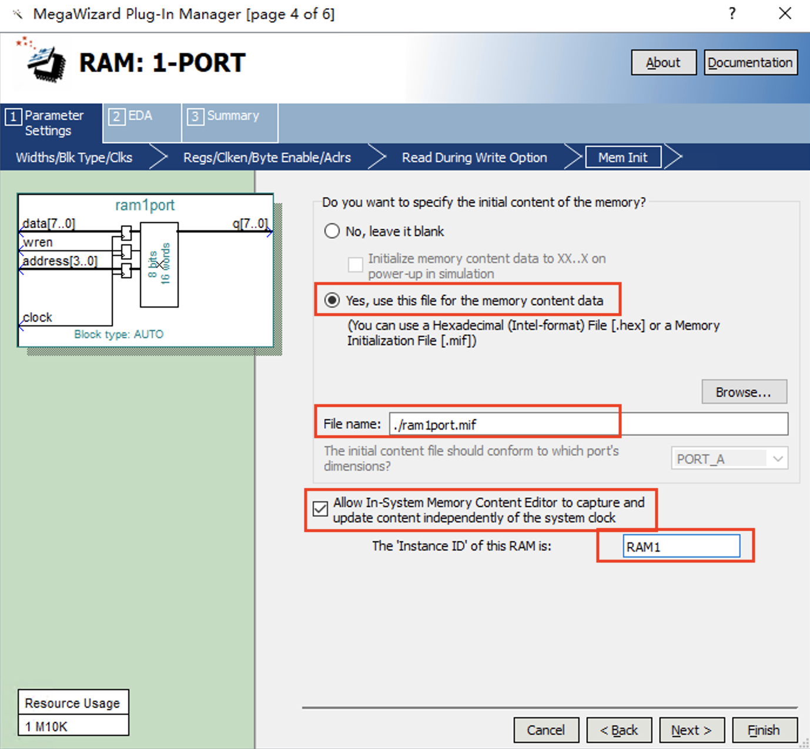

This feeling can be cherished as a memory, but at the time it was vague.
— “Jinse,” Li Shangyin
The register file and memory are memory devices in digital systems used to store programs and data. From a programmer’s perspective, the state of the CPU is uniquely determined by the information in its registers and memory. The registers include the program counter (PC) and general-purpose registers, while the memory refers to the main memory. We can view a computer as a large finite-state automaton. Once the information in these storage components is determined, the computer’s state is also determined. In the absence of external input, the computer’s subsequent operational state is also uniquely determined.
The purpose of this lab is to understand the characteristics of FPGA flip-flops and on-chip memory, analyze the timing and structure of memory, and learn how to design register files and main memory.
FPGAs have a large number of flip-flop resources for data storage. D flip-flops can be used to store bit signals. Adding a set function to a D flip-flop turns it into a one-bit register, as shown in Figure fig-reg01. As shown in the figure, if the load signal is 1, the input signal in is sent to the OR gate, and the other input of the OR gate is 0. At this point, D = in, so in the next clock cycle, q = in. When the load value is 0, the q value is fed back to the OR gate, and the other input of the OR gate is 0. At this point, D = q, so in the next clock cycle, the q value remains unchanged from the previous value.
This example implements a 1-bit register with a clear bit and an input bit. Some registers also have a set bit (set to 1). Figure fig-reg03 shows the logic diagram of a register with a clear bit, an input bit, and a set bit. Readers can design this register themselves.
Combining two or more 1-bit registers that share a clock signal forms a multi-bit register. Registers are often used in computers to store data, such as instruction registers and data registers. Table list-reg02 is an example of register design using Verilog language.
Memory is a set of storage units used to store binary data in a computer, as shown in Figure fig-mem01. Memory ports include input ports, output ports, and control ports. Input ports include read/write address ports, data input ports, etc. Output ports generally refer to data output ports. Control ports include clock ports and read/write control ports. The memory works as follows:
Writing data: On the rising or falling edge of the clock (clk), if the write enable (Wr_en, which may or may not be present) is active, the data on the data input bus (Data_in) is read and stored in the memory cell pointed to by the input address line (In_addr).
Read data: The output of the memory can be controlled by the clock and enable pins, or it can be controlled independently of the clock and enable pins. If the output is controlled by the clock, then on the valid edge of the clock, the data in the cell indicated by the output address is output to the output bus (Data_out); if it is not controlled by the clock, then as long as the output address is valid, the data in the cell pointed to by this address is immediately sent to the output bus.
Pay attention to the read/write timing of the memory.
For memory, read and write timing is very important, and it is also an area where errors are prone to occur in practice. When reading data, at what point in time is the data valid, and how long after writing data can it be read? These issues must be repeatedly checked and verified during the design process.
There are many operating modes for FPGA memory, such as true dual-port RAM, simple dual-port RAM, single-port RAM, ROM, or FIFO cache. Please refer to the table below for common modes.
Simple dual-port mode supports simultaneous read and write (one read, one write)
Simple dual-port memory mode with mixed widths
Read and write using different data widths in simple dual-port mode
True dual-port memory mode
True dual-port mode supports any combination of dual-port operations: two read ports, two write ports, and one read port and one write port at different clock frequencies.
True dual-port memory mode with mixed widths
True dual-port mode using different data widths for reading and writing
ROM
Working in ROM mode, the contents of the ROM have been initialized.
FIFO buffer
Can implement single-clock or dual-clock FIFO
In Verilog HDL, memory can be defined using a two-dimensional array. For example, suppose you need a 32-byte 8-bit memory block, i.e., this memory has a total of 32 memory units, each of which can store an 8-bit binary number. Such memory can be defined as a \(32 \times 8\) array, which can be declared as a variable in Verilog as follows:
reg[7:0]memory_array[31:0];
The storage units are memory_array [0] to memory_array [31], and each storage unit have size of 8 bits.
When reading, you can directly read the lower 4 bits of the 13th unit using memory_array [13][3:0].
Differences and similarities between registers and memory
Although registers and memory are both used to store status information, there are significant differences between them in terms of their usage and implementation:
Registers generally require fast access speeds and high parallel access, so their capacity is typically small. In a CPU, the program counter (PC) and general-purpose registers are frequently accessed, so the access latency must be within one clock cycle. For single-cycle CPUs, each clock cycle often requires reading two general-purpose registers and completing the write back of one register at the same time. When the requirements are high, it is possible that the results output by the register file need to be output asynchronously, that is, not read on the clock edge, and the output changes in real time with the input address. Under such high requirements, the size of the register file cannot be too large, otherwise it will consume a lot of resources.
Main memory generally has a large capacity, but the read and write times are long, and the read and write processes have strict timing requirements.
In Verilog, although the register file and memory are both described as two-dimensional arrays, the specific implementation method is selected according to the code access requirements during the compilation and synthesis process. For example, when the code does not strictly require read/write operations on clock signal edges, the system assumes that the read/write requirements for the storage unit are high and directly implements it using FPGA logic units. This implementation consumes a significant amount of resources and typically only supports storage units in the range of a few kilobytes. If a large number of such storage functions are required, the system may take a long time to compile and synthesize, or may even be unable to implement them. If the access of a memory cell strictly follows the timing requirements and only reads and writes each individual cell on the clock edge, the system can use a large-capacity M10K to implement storage, which can generally support a capacity of several hundred kilobytes. Therefore, special attention should be paid to the reading and writing of memory in experiments, avoid viewing memory from the perspective of a two-dimensional array in a high-level language, otherwise it will cause many unexpected consequences.
The Cyclone V series FPGA contains two types of embedded memory blocks:
10Kb M10K memory block—This is a dedicated memory resource block. The M10K memory block is ideal for large memory arrays and provides a large number of independent ports.
64-bit Memory Logic Arrays (MLABs) — An embedded memory array configured from dual-purpose logic array blocks. MLABs are ideal for wide, shallow memory arrays. MLABs are optimized for use in digital signal processing (DSP) applications as shift registers, wide shallow FIFO buffers, and filter delay lines. Each MLAB consists of 10 adaptive logic blocks (ALMs). In Cyclone V series devices, you can configure these ALMs into 10 \(32 \times 2\) modules, so that each MLAB can implement a \(32 \times 20\) simple dual-port SRAM module.
Cyclone V series FPGA embedded memory resources are shown in Figure fig-mem02. We can compare them with the memory resources of Cyclone V SX C6 on the DE10-standard development platform.
Quartus automatically selects the number and configuration of memory modules used in hardware implementation based on the speed and size of the user’s memory design. For example, to improve design performance, Quartus may expand a memory design that can be implemented with a single RAM to multiple RAMs.
Memory behavior and FPGA’s RAM modules
When synthesizing the following memory, will the synthesizer use the FPGA’s RAM module to implement this module?
list-mem02 is a memory instance with three output ports. Analyze the memory structure and working process, view the RTL diagram of this memory, check the input/output and storage structure of the memory, and analyze the differences in the structure of the three output ports. Design a test code for this instance, examine the timing differences between the three port outputs, and explain the timing of its operation based on the RTL diagram.
The initial statement block completes the initialization of RAM at start-up.
Select the appropriate input/output port width, apply pin constraints to this instance, use a switch or button as the clock port, and verify the working timing of different input/output modes on the development board again.
When the amount of RAM data that needs to be initialized is large, you can use files to load the RAM data directly at system startup.
Verilog provides the following statements to import data from files into RAM:
The above content can replace the RAM initialization section in the previous example, importing the data in mem1.txt into RAM variables 0 to 7. Please note that mem1.txt can be located in any directory that does not contain Non-ASCII characters, but the absolute path to this file must be specified in the initialization statement, otherwise the initialization data will not be visible during simulation.
The content and format of mem1.txt are as follows:
@00d@182@221@303@420@5ff@650@704
The @ symbol is followed by the RAM address, followed by the hexadecimal RAM data. In Verilog, the $readmemh method reads hexadecimal data, and the $readmemb method reads binary data.
When initializing memory, you can choose to initialize only some of the memory cells and leave others uninitialized. For example, suppose that the RAM has eight memory cells. The following initialization initializes only memory cells \(0$\sim$5\), which is also acceptable.
Assuming that the memory RAM has eight storage units, the following initialization attempts to initialize units 0 to 8 of the memory, for a total of nine units, which is not allowed.
Quartus provides many practical IP cores that can be used to easily implement complex designs. Now, let’s take the design of a memory as an example to introduce how to use Quartus IP cores.
A pop-up window will appear. Give this IP a name. Here, we will name it “ram1port.” It will be saved in the current project directory by default. Select Verilog as the hardware description language file corresponding to the IP core.
Select the memory size: Here, we select a \(16 \times 8\) bit memory, and the compiler automatically selects whether to implement the memory as M10K or MLAB. At the same time, we select a uniform clock to control reads and writes.
Configure buffer and enable signals, etc. Note that we do not cache the output here. You can try adding output cache yourself and experiment with how many clock cycles the RAM needs to output when caching.
For single-clock RAM, choose how to resolve “write-while-read” data conflicts. As mentioned in the opening poem “Jin Se”, data written in the current cycle may not necessarily be read in the current cycle.
When creating memory, you can choose not to initialize it, or you can use a hexadecimal (.hex) file or a memory initialization file (.mif file) to initialize it. When the configuration reaches Figure fig-step10, you can choose to use the file to initialize the memory.
In this step, you can also configure dynamic memory updates by selecting “Allow In-System Memory Content Editor” \(\ldots\), and give your memory module an appropriate name, such as RAM1.

Fig. 41 Initialization configuration and dynamic memory update configuration
Below is an introduction to the generation of .mif files.
Return to the Quartus workspace, click File->New, select MemoryInitializationFile under the MemoryFiles directory, and click OK. Select settings based on memory size:
Select the .mif file you just saved, click Open, and select the memory initialization file. Click Next, Next, and Finished to complete the configuration of the single-port RAM.
In the project navigation bar, under the Files directory, expand ram1port.qip to see the ram1port.v file generated for this RAM. Double-click to open it and see the interface parameters of ram1port.v. Instantiate this RAM in the top-level entity of the memory design to use it in the design:
You can also use mif files to initialize memory in programming. The following statement uses data.mif to initialize myrom.
At this point, the mif file and the .v file must be in the same directory.
Quartus provides an In-System Memory Content Editor to view and update the contents of RAM in real time. This is very useful for debugging. Especially in CPU experiments, if the CPU design has not changed but you need to modify the assembly code running in the system, you can directly use the In-System Memory Content Editor to make changes without having to recompile the entire project.
Before using the In-System Memory Content Editor, please compile the entire project completely and ensure that the dynamic memory update feature was selected when generating the IP core.
After programming and running the development board, open Quartus’s Tools->In-SystemMemoryContentEditor. Enter the interface shown in Figure fig-memedit01. At this point, you need to first select the hardware and connect the development board. The JTAG will then be scanned automatically; please select the second device. At this point, the RAM1 identifier that was just configured should appear on the left, but the data has not yet been updated.
If you need to change the data in RAM, you can either modify the data manually or right-click and select ImportDatafromfile to update it with a new mif file. After updating, please remember to right-click and select Write data to In-System Memory to apply the changes.
Please complete the following register file and RAM in a single project. The sizes of the register file and RAM are both \(16\times 8\), meaning they each have 16 storage units, each of which is 8 bits wide and capable of both reading and writing.
Implement register file
No clock control is required during read operations. That is, once the read address is valid, data is output directly. Write operations are controlled by the rising edge of the clock.
Use the IP core to design a single-port memory, use the .mif file for initialization, and the initialization values of the sixteen units are: 0xf0, 0xf1, 0xf2, 0xf3, 0xf4, 0xf5, 0xf6, 0xf7, 0xf8, 0xf9, 0xfa, 0xfb, 0xfc, 0xfd, 0xfe, and 0xff.
If the IP core does not support a single-port memory with a minimum of 16 units, you can use a 32-unit or 64-unit single-port memory instead, with the address high position set to zero to use only 16 RAM units.
These two physically different memories share the same clock and read/write addresses. Select the clock signal and write enable signal appropriately so that you can read and write to these two memories separately. Display the results read from the two memories separately using two seven-segment displays. Use the input/output resources of the FPGA development board reasonably to complete the design of this register file and RAM. Due to the insufficient number of inputs on the development board, only 2 bits of data can be written at a time.
Use the In-System Memory Content Editor to modify the data in the RAM and verify that your modifications are actually updated on the development board.
Use the buttons on the development board as the clock signal for the memory. Observe how many clock cycles are required to complete the read or write operation in each of the two different implementation methods.
Open Tools->NetlistViewers->TechonlogyMapViewer, click on the implementation tree structure to find the two memories you generated, and observe how these two memories are implemented after synthesis and why.
Pay attention to the resource consumption after synthesis. Which memory may have consumed the resources in the two red boxes in Figure fig-ramresource? If we use the register method, how much storage capacity can our development board support? What about Block Memory?
Differences and similarities between registers and memory
Although registers and memory are both used to store status information, there are significant differences between them in terms of their usage and implementation:
Registers generally require fast access speeds and high parallel access, so their capacity is typically small. In a CPU, the program counter (PC) and general-purpose registers are frequently accessed, so the access latency must be within one clock cycle. For single-cycle CPUs, each clock cycle often requires reading two general-purpose registers and completing the write back of one register at the same time. When the requirements are high, it is possible that the results output by the register file need to be output asynchronously, that is, not read on the clock edge, and the output changes in real time with the input address. Under such high requirements, the size of the register file cannot be too large, otherwise it will consume a lot of resources.
Main memory generally has a large capacity, but the read and write times are long, and the read and write processes have strict timing requirements.
In Verilog, although the register file and memory are both described as two-dimensional arrays, the specific implementation method is selected according to the code access requirements during the compilation and synthesis process. For example, when the code does not strictly require read/write operations on clock signal edges, the system assumes that the read/write requirements for the storage unit are high and directly implements it using FPGA logic units. This implementation consumes a significant amount of resources and typically only supports storage units in the range of a few kilobytes. If a large number of such storage functions are required, the system may take a long time to compile and synthesize, or may even be unable to implement them. If the access of a memory cell strictly follows the timing requirements and only reads and writes each individual cell on the clock edge, the system can use a large-capacity M10K to implement storage, which can generally support a capacity of several hundred kilobytes. Therefore, special attention should be paid to the reading and writing of memory in experiments, avoid viewing memory from the perspective of a two-dimensional array in a high-level language, otherwise it will cause many unexpected consequences.